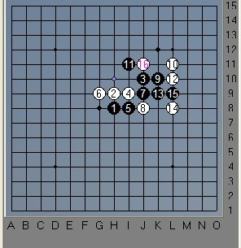

蔡力捷VS沈毅
#1 蔡力捷VS沈毅 作者：茗弈小刀 发表时间：2009-9-13 16:06:45
闲来无事，翻开2008上海A组联赛的棋谱，看到这场蔡力捷（执白）和沈毅（执黑）老师的对局，顺便写个小评与大家分享下。
（图一）
疏星开局2打，行至10手为最常见的变化。11手一般在K7,最强，也是这个变化的定式。但沈毅老师11手避开了常见的下法，落在I11活2。这个11手曾是苏梁对日本奈良秀树最先下出，当时，苏梁取得了胜利。后来经研究，黑11并不能给黑棋带来优势。第一界全国赛中张进宇和陆瑶老师也曾下过这个局，后边的不记得当时2位老师怎么下的了。上图是简单分析12手的位置，A点比较稳妥，B点是积极的一手，C点目的也是控制，D点压缩黑的空间。蔡老师，（嘎嘎，第一次叫他老师。蛮喜欢叫他宝宝的。）这个实战的12也不错，2个活2并档了黑一个活2.。这里黑应该活三了，俗话说不思争先，胜比登天。黑活三可以削掉白一个活2.这里要交换一下。我们来看实战：
（图二）
可能沈毅老师考虑到活三白有反，故13手选择在下边档，其实这样是比较消极的。即使白反了，交换过后黑仍占优势的，演变如下：

以上是简单分析，感觉还是黑优的。我们回到实战上，大家请看上边（二）图，如果沈老师这个13。14在A位置，那么左边有2个活二一个眠三，基本必胜型了，当然黑棋还可以交换下，但结果绝对是很苦的。实战中蔡老师下了这个14，活三，进攻！妙招！
14手是本局杀着的呼手，15无奈档一手，右边白的棋型非常巨大坚实了，白方跳活三继续进攻，连贯做杀，酣畅淋漓！
这盘棋13手是败招，14是亮点，蔡老师机会捕捉也非常敏锐。那么这里偶要冒昧的给沈老师提点小小的建议了：有的时候下棋不该贪的时候切记不要贪，因为您这个13手其实是想和自己那个眠三相应，在下边去控制发展，可忽略了中间的棋形仍很宽敞，14手后黑显然控制不住了，所以这个13也是有漏洞的。再落子前一定分析清楚对手的子力分布状况和思维路线也换位思考他想怎么下。最后我们祝2位老师经后取得更好成绩！支持您们！
［ 潇洒 于 2009-9-13 16:14:47 时奖励此帖[金币加 20 威望加1］
［ 索非亚 于 2009-9-13 16:39:01 时花20金币送鲜花一朵］
［ 梦醉南天 于 2009-9-13 16:41:06 时花20金币送鲜花一朵］
［ 慎独 于 2009-9-13 17:20:18 时花20金币送鲜花一朵］
［ 茗奕的飞猪 于 2009-9-13 17:28:03 时花20金币送鲜花一朵］
［ 茗奕的飞猪 于 2009-9-13 17:28:55 时花20金币送鲜花一朵］
［ 茗奕的飞猪 于 2009-9-13 17:29:03 时花20金币送鲜花一朵］
［ 黄药师 于 2009-9-13 17:33:27 时奖励此帖[金币加 20 威望加1］
［ 胆小的骆驼 于 2009-9-13 19:04:04 时花20金币送鲜花一朵］
［ 胆小的骆驼 于 2009-9-13 19:04:11 时花20金币送鲜花一朵］
［ 胆小的骆驼 于 2009-9-13 19:04:18 时花20金币送鲜花一朵］
［ 行云流水 于 2009-9-13 20:20:33 时奖励此帖[金币加 20 威望加1］
［ 米 于 2009-9-13 23:15:37 时花20金币送鲜花一朵］
［ 五子痴 于 2009-9-14 17:39:31 时花20金币送鲜花一朵］
#2 Re:蔡力捷VS沈毅 作者：茗弈真实的谎言 发表时间：2009-9-13 16:36:30
写得好！顶一个！加油宝贝！#3 Re:蔡力捷VS沈毅 作者：安娜制作所 发表时间：2009-9-13 16:44:03


#4 Re:蔡力捷VS沈毅 作者：潇洒 发表时间：2009-9-13 16:44:10
顶下小刀的帖子~~［ 慎独 于 2009-9-13 17:20:34 时花20金币送鲜花一朵］
#5 Re:蔡力捷VS沈毅 作者：风雪无阻 发表时间：2009-9-13 16:45:24
写得精彩，支持！［ 茗弈小刀 于 2009-9-13 17:06:37 时奖励此帖[金币加 20 威望加1］0+1
#6 Re:蔡力捷VS沈毅 作者：举步回眸浅浅笑 发表时间：2009-9-13 16:46:30
我也支持你，亲爱滴
［ 慎独 于 2009-9-13 17:20:49 时花20金币送鲜花一朵］
#7 Re:蔡力捷VS沈毅 作者：厦小三 发表时间：2009-9-13 16:54:18
我支持你哈~［ 茗弈小刀 于 2009-9-13 17:08:16 时奖励此帖[金币加 20 威望加1］0+1
#8 Re:蔡力捷VS沈毅 作者：梦醉南天 发表时间：2009-9-13 16:58:34
这机会，抓的漂亮！讲的更漂亮，呵学习了，谢谢
［ 慎独 于 2009-9-13 17:21:07 时花20金币送鲜花一朵］
#9 Re:蔡力捷VS沈毅 作者：茗奕的飞猪 发表时间：2009-9-13 17:27:28
写的不错，支持！顶一个↗ ↗ 。。
。。
#10 Re:蔡力捷VS沈毅 作者：茗弈梓轩 发表时间：2009-9-13 18:34:19
小刀姐的棋评让人佩服，顶两个！！
#11 Re:蔡力捷VS沈毅 作者：高星 发表时间：2009-9-13 19:06:37
 写得VERY NICE啊
写得VERY NICE啊
#12 Re:蔡力捷VS沈毅 作者：胆小的骆驼 发表时间：2009-9-13 19:07:06
支持，，学习
#13 Re:蔡力捷VS沈毅 作者：茗弈小刀 发表时间：2009-9-13 21:04:52
谢谢大家厚爱，更恳请大家提出宝贵意见，这样我才能完善和进步。#14 Re:蔡力捷VS沈毅 作者：怪 发表时间：2009-9-14 9:03:53
陆瑶还下棋？
当年还买过她的那本连珠陆遥来着，讲的真好，中国连珠女子第一人啊。
#15 Re:蔡力捷VS沈毅 作者：小丸.net 发表时间：2009-9-14 11:12:35
沈大帅的棋风我知道，他很随手的，不过他的随手比起我长考Ｎ个小时还管用。。。。
#16 Re:蔡力捷VS沈毅 作者：妙玉偷星 发表时间：2009-9-27 11:58:38
下次多像沈老师讨教，